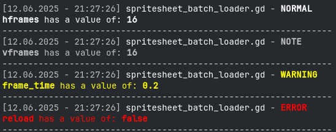

Description
The BetterPrint addon provides a few functions to make print outputs to the console look a little bit nicer and provide more information (like timestamps and script names), while keeping the syntax simple.
Message types
Normal
Note
Warning
Error
Question
ToDo
Measure
Custom
Methods
BetterPrint.variable(variable_name:String, caller:Object, message_type:String = "NORMAL")Prints a variable name and it's corresponding value. Put "self" as caller so that the name of the script the print command is called from is visible.

BetterPrint.multi_variable(variable_names:Array[String], caller:Object, message_type:String = "NORMAL")Prints the names and values of multiple variables at once. Put "self" as caller so that the name of the script the print command is called from is visible.

BetterPrint.message(message:String, caller:Object, message_type:String = "NORMAL")Prints a text message. Put "self" as caller so that the name of the script the print command is called from is visible.

BetterPrint.custom(message:String, caller:Object, message_type:String = "CUSTOM")Prints a text message with a custom named type. Put "self" as caller so that the name of the script the print command is called from is visible.

BetterPrint.url(url:String, caller:Object, message_type:String = "NORMAL")Prints clickable links. Put "self" as caller so that the name of the script the print command is called from is visible.

BetterPrint.start_measure(measure_name:String)
#Your code here
BetterPrint.end_measure(measure_name:String, caller:Object)Start a time measure in your code first and give it a unique name. When setting the endpoint the time between start- and endpoint is printed in milliseconds. Put "self" as caller so that the name of the script the print command is called from is visible.